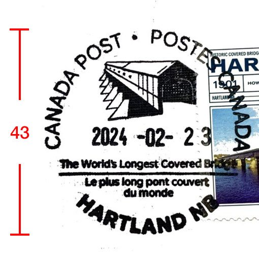

Hartland STN Main pictorial cancel
The World's Longest Covered Bridge – Le plus long pont couvert du monde
- Status
- Active
- Run dates
- 2023-01-01 to present
- Design
- "The World's Longest Covered Bridge / Le plus long pont couvert du monde"; Hartland Covered Bridge; national historic site of Canada
- Ink colour
- Black
- Designer
- Unknown
- Post office
- Hartland STN Main
17 Main Street
Hartland, NB
E7P 2X5 - Subjects
- covered bridge, architecture, NHS
Collect it by mail. Send your stamped covers, with a stamped return envelope, to the post office address above. How to collect pictorial cancels by mail · en français
 Bath STN MainBathtub
Bath STN MainBathtub Upper Kent POOgging (lumbering), trees, river and fishes
Upper Kent POOgging (lumbering), trees, river and fishes Juniper POTrain, fish, trees
Juniper POTrain, fish, trees Plaster Rock POWorld Pond Hockey Championship
Plaster Rock POWorld Pond Hockey Championship Harvey Station POPAYS DE DON MESSER COUNTRY
Harvey Station POPAYS DE DON MESSER COUNTRY New Denmark POOldest Danish Settlement in Canada
New Denmark POOldest Danish Settlement in Canada